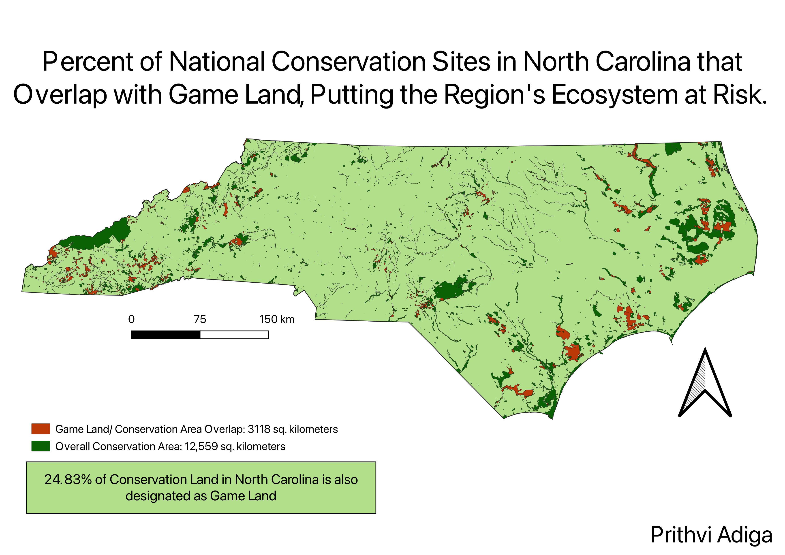

This map has two original vector layers that I altered with geoprocessing techniques (Dissolve and Intersection) along with a third base layer showing
an outline of NC and its counties. The layers to be altered are Game Land in North Carolina and National Conservation sites in North Carolina. I chose these layers because I wanted
my project to relate to conservation. I noticed that there was overlap between the two layers, which was difficult to understand since one is for hunting and fishing, while
the other is dedicated to preserving the land and its biodiversity.
The first thing I did was create an intersection layer between Game Land and Conservation using geoprocessing
in order to visualize the overlap. My plan was to find the areas of the intersection and of the entire conservation area layer and divide them, to find the percentage of national
conservation land that is at risk of poaching by hunters. I dissolved both of these layers so that it would be easier to find their area using the field calculator in their attribute
tables. The default area unit was in meters square, but since I wasn't dividng by hand and was ultimately looking for a percentage, I didn't see an issue with it. I did have to change
data type from a 32 bit integer to a 64 bit integer since the highest value a 32 bit integer can store is 2^32 which is roughly 4 billion. The overall conservation area amounts to exactly
12,559,056,356 meters squared, or 12,559.06 square kilometers. The area of the intersection of Game Land and Conservation Areas amounts to exactly 3,118,180,349 meters squared, or 3118.2 square
kilometers. When the intersection is divided by the total conservation area, the result shows that 24.83% of conservation land in North Carolina is also designated as game land. With so many small
polygon shapes present, the map looked very cluttered, so for cosmetic purposes I dissolved the base map to remove the county boundaries which were ultimately unecessary for conveying useful information.

Link to Original Game Land Vector
Link to Original Conservation Area Vector
Link to Dissolved Conservation Area Polygon
Link to the Intersection Between Game Land and Conservation Areas
{kind=link}